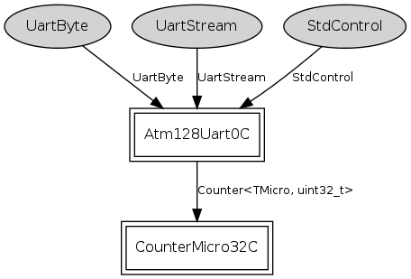

Component: tos.platforms.mica.PlatformSerialC
configuration PlatformSerialC
Author:
Alec Woo <awoo@archrock.com>
Jonathan Hui <jhui@archrock.com>
Version:
$Revision: 1.4 $ $Date: 2006-12-12 18:23:42 $
Provides
interface
StdControl
interface
UartByte
interface
UartStream
Wiring
